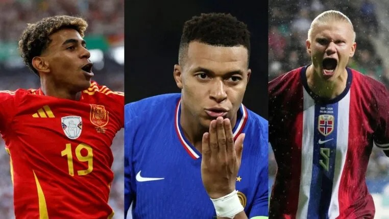

VAR
O árbitro assistente de vídeo auxilia a arbitragem na análise de determinados lances durante as partidas.

O futebol continua sendo um dos esportes mais populares do mundo. Porém, o futebol moderno passou por grandes transformações dentro e fora dos campos.
Tecnologia, redes sociais, investimentos, análise de dados e novas estratégias mudaram a maneira como o esporte é praticado, administrado e acompanhado pelos torcedores.
A tecnologia modificou diversas áreas do futebol, desde a arbitragem até a preparação física dos atletas.
O árbitro assistente de vídeo auxilia a arbitragem na análise de determinados lances durante as partidas.
Equipamentos podem registrar informações sobre velocidade, distância percorrida e intensidade dos jogadores.
Sistemas de análise podem utilizar grandes quantidades de dados para auxiliar clubes e profissionais na tomada de decisões.
Atualmente, os jogadores podem ser avaliados através de diversas estatísticas.
| Análise | O que é avaliado | Emoji |
|---|---|---|
| Velocidade | Velocidade máxima do jogador | 🏃 |
| Distância | Quilômetros percorridos | 📏 |
| Passes | Quantidade e precisão dos passes | 👟 |
| Finalizações | Chutes realizados e gols | ⚽ |
| Conquistas | Campeonatos e disputas | 🏆 |
O futebol deixou de ser apenas uma modalidade esportiva e passou a movimentar uma enorme indústria, ainda mais com a chegada das bets, o que gerol um impacto bilhonario no esporte conforme a reportagem a seguir.
Bets no Futebol